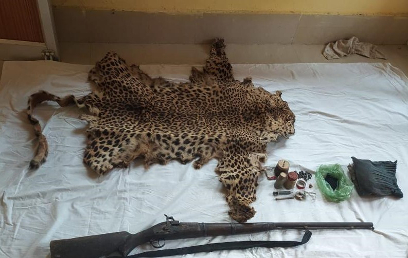

Wilpattu National Park
Ranging over 131 thousand hectares, it is Sri Lanka's largest and one of the oldest protected areas. The park consists of five blocks declared between 1938-1973 under the Fauna and Flora Protection Ordinance and is managed by the Department of Wildlife Conservation

Yala National Park
Yala National Park is one of the most well-known and visited national parks in Sri Lanka. It is renowned for its high leopard density, making it a prime location for leopard sightings. The park features a variety of ecosystems, including open grasslands, dense jungles, and coastal areas. Yala is not only home to leopards but also hosts a wide range of other wildlife, including elephants, sloth bears, and numerous bird species. The park is divided into several blocks, with Block 1 being particularly famous for leopard encounters.

Horton Plains National Park
Horton Plains National Park, a UNESCO World Heritage Site, is characterized by its montane grasslands and cloud forests. While it may not be as well-known for leopard sightings as some other parks, Horton Plains provides a unique and picturesque setting for encountering these big cats. The park is also home to sambar deer, wild boars, and various endemic bird species. The relatively open landscapes of Horton Plains offer a different experience compared to the more densely vegetated parks, making it a captivating destination for nature enthusiasts.
Poaching
Poaching refers to the illegal hunting, capturing, or killing of wild animals, often driven by a demand for their body parts, skins, or other products. This illegal activity poses a significant threat to many species, including leopards, elephants, and rhinoceroses.
Consequences